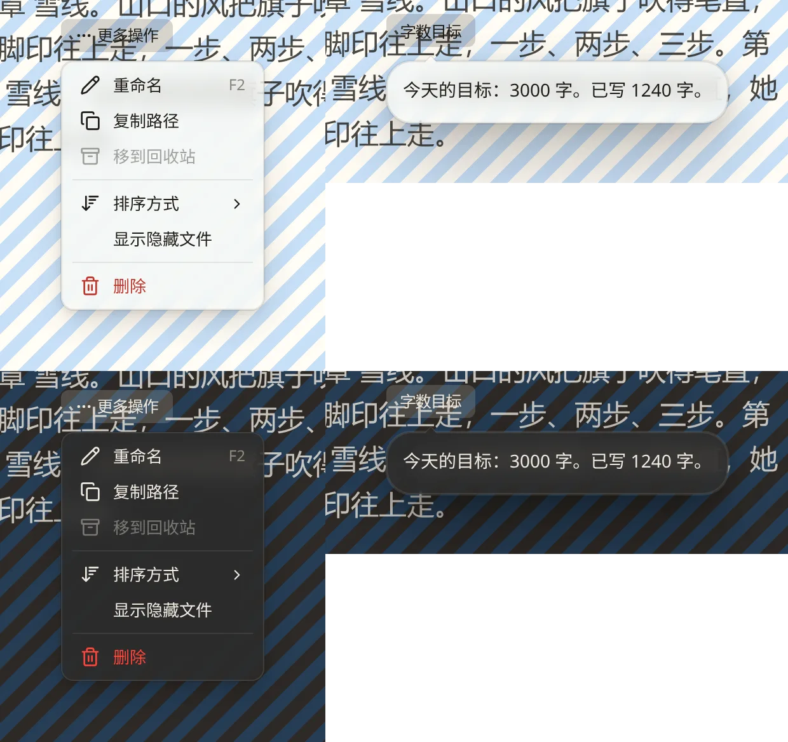
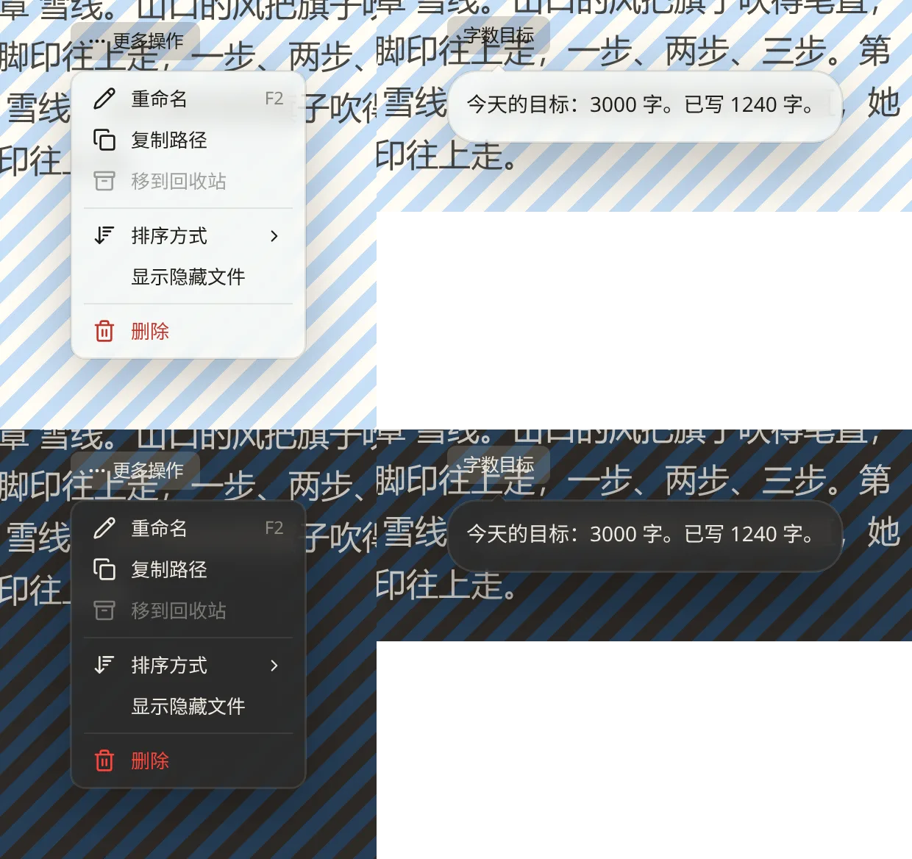
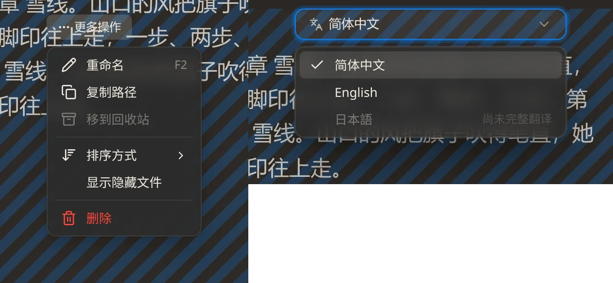
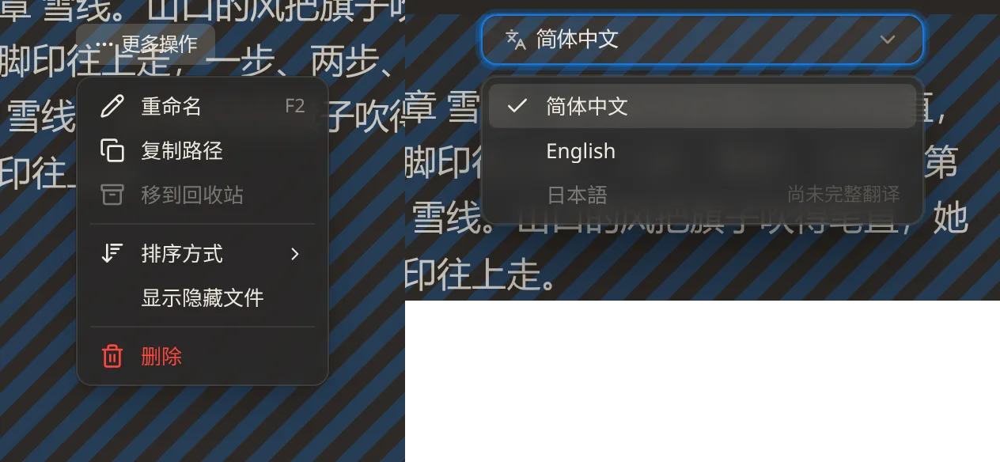
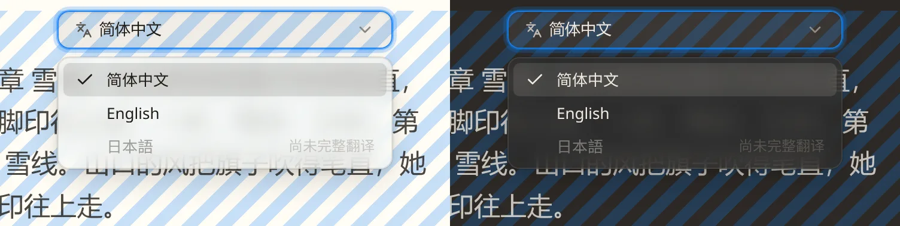
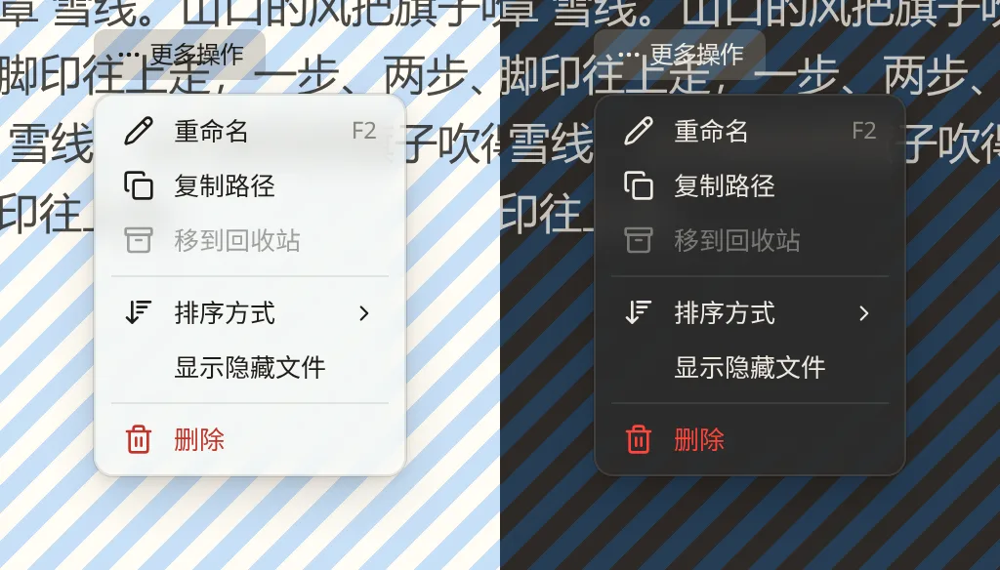

nb-ui 规范：三处文档与代码的分歧
w00029 t05（规范文档整理）开工前要定的三件事。依据是上一轮文档审查（evidences/spec-review.txt 的 F04、F05、F10、F43）。三处都是文档和代码说法不一致，要定以哪边为准，另一边跟着改。
截图来自 Lab 里的真实组件，nbook 主题，2 倍像素。背后铺了条纹和文字，玻璃与投影的差别才看得出来；“另一种”是在页面上临时改变量或去掉内联样式得到的，没有改源码。
F04：浮层投影有几层 待定
现在三处文档三种说法：design-language.md 坑 38 说外阴影只能两条（一条发丝轮廓加一条环境投影，出现第三条就是踩坑）；规范一处写“4 阶”，另一处给了另一组数值。代码是一圈 1px 外环加三层柔影（浮层 --elevation-popover），菜单是细边加两层（--elevation-menu）。差别很小，主要在浮层下沿远处那一圈影子。
保留现在的多层投影，文档照实改（推荐）

不改代码。坑 38 改写为现状的分工与判据，数值只留在 tokens.css 与主题 vars.css，规范里删掉抄出来的两组数值。
改成 Apple 式两条，改代码

0 0 0.3px 0.3px 加一条环境投影（浮层 48px、菜单 40px 模糊）所有浮层与菜单的投影都会变；数值要按截图再调一轮。
F05：暗色的玻璃要不要压暗 待定
坑 7 要求暗色时 backdrop-filter 的 brightness 小于 1（举例 0.76）；规范与代码都是 1.0，规范还写了“彻底纠正 0.72”。下图左菜单、右 Select，都是暗色。
保持 1.0，不压暗（推荐）

不改代码。坑 7 的判据改为“暗色档要有自己的配方，不照抄亮色”。
压暗到 0.76

背后的文字透出来更暗、面更沉；改主题的 --overlay-blur 一处。
--overlay-surface 的不透明度压住了背景，再压暗面会发闷；规范上一轮是有意改成 1.0 的。F10/F43：浮层外观以哪里为准 待定
设计文档说浮层外观只有一个登记处：CSS 类 .nb-ui-popover-surface（加菜单的 .nb-ui-menu-surface），主题经变量改它。规范却要求组件调用一个函数套外观。代码里 Select 与 ColorSwatches 的投影和模糊写死在 JS 常量里（现在在 usePopoverLayer.ts），以内联样式盖过 CSS 类：它们不跟主题走，暗色下用的仍是亮色那组投影，与同样是下拉的 DropdownMenu 不一样。这一项也是 w00030 计划的第 5 项。
只认 CSS 类，删掉 JS 常量（推荐）


组合函数只管行为（层级、截断高度、定位参数）。token-consumption.test.ts 去掉对这份常量的放行。代码改动在 w00030 t03 做，t05 先按这个写规范。
以组合函数里的常量为准
所有下拉都改成绑这份内联样式；主题就改不了下拉的投影与模糊，设计文档“唯一登记处是 CSS 类”一节要改写。